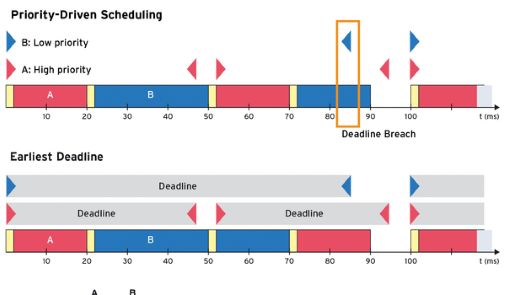
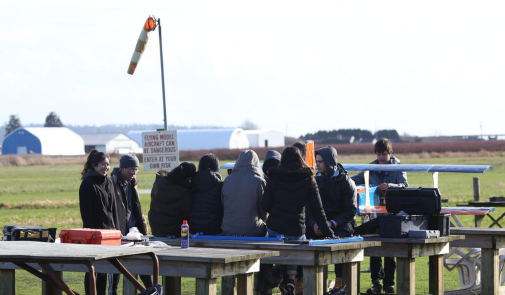
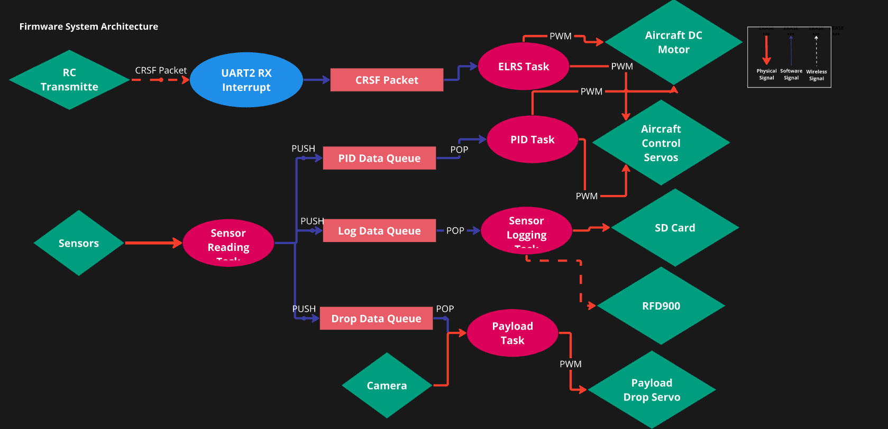
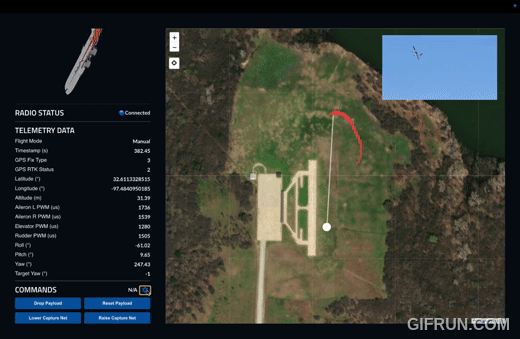

EDF and SRP in FreeRTOS
Kernel-level scheduler and synchronization work that directly informed the real-time architecture used in this project.
Learn moreSTM32-based autopilot firmware, FreeRTOS real-time control, and a custom desktop ground station.
I served as a software co-lead on UBC AeroDesign, where we built a 3.5 lb autonomous fixed-wing aircraft for the 2025 SAE AeroDesign competition. Our team of 8 developers worked to deliver a flight software stack on STM32 hardware, from low-level sensor interfaces up to autonomous mission logic and ground station tooling.

The system is split across onboard firmware and a desktop ground station. On the aircraft side, the architecture emphasizes deterministic timing, reliable telemetry, and clean interfaces between sensing, controls, and communications.
We designed our firmware architecture to use DMA-driven sensor acquisition while FreeRTOS tasks run flight controls, waypoint planning, and ground station communications in parallel. This lets us maintain high-rate measurements without blocking critical control loops.
At a high level, the flight stack is organized in four layers: hardware abstraction (UART, I2C, SPI, SD), sensor and estimation, flight-state and control logic, and telemetry/command interfaces to the ground station. This separation made it easier for multiple developers to iterate in parallel without breaking flight-critical pathways.

Hardware block diagram

Software block diagram
The STM32H723 flight controller firmware runs on FreeRTOS (CMSIS-RTOS v2) with dedicated tasks for flight control, sensor fusion, and telemetry/logging. We intentionally split responsibilities so each loop has a clear deadline and ownership.
To reduce CPU overhead and improve responsiveness, the firmware uses UART DMA Receive-to-Idle on both pilot-control and GNSS links. Incoming packets are parsed in callback-driven flows, then handed to the control/state logic.
A dedicated flight state machine manages transitions between manual pass-through, auto-level/autopilot, and failsafe. If receiver packets time out, the system enters failsafe and drives throttle and control surfaces to safe outputs.
Our onboard stack combines a custom flight controller and supporting avionics hardware to handle sensing, control, and payload interfaces. The goal was to create a robust platform we could iterate on quickly throughout testing.

We built a custom ground station with live flight tracking, telemetry visualization, and remote payload actuation. The stack uses a Python and Redis backend with a React and Electron desktop frontend so our operators can monitor and command the aircraft in real time.
On the backend, the radio process unpacks incoming telemetry and publishes it to Redis streams. On the desktop side, an Electron process bridges Redis updates into the React UI for live flight-state awareness, telemetry visualization, and command dispatch back to the aircraft.


Kernel-level scheduler and synchronization work that directly informed the real-time architecture used in this project.
Learn more
Real-time control and embedded systems experience that translated directly to flight software development.
Learn more